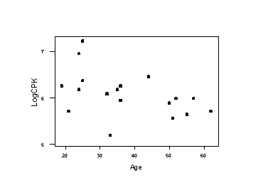
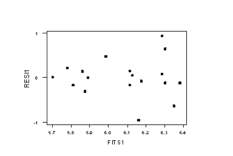
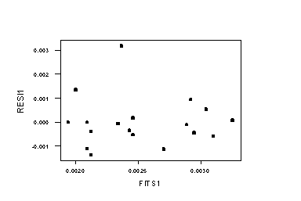
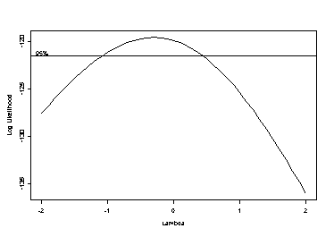
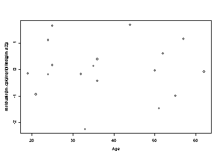

| / Home |
Keywords: simple linear regression, transformation, variance modelling.
CPK (creatine phosphokinase) is a enzyme contained within muscle cells which is necessary for the storage and release of energy. It can be released into the blood in response to vigorous exercise from damaged (leaky) muscle cells. This occurs often even in healthy athletes.
This study intestigated the metabolic effect of cross-country skiing. Subjects were participants in a 24 hour cross-country relay. Age, weight (kg) and blood CPK concentration 12 hours into the relay were recorded.
Data File (tab-delimited text file)
| Zuliani, U., Mandras, A., Beltrami, G. F., Bonetti, A., Montani, G., and Novarini, A. (1983). Metabolic modifications caused by sport activity: effect in leisure-time cross-country skiers. Journal of Sports Medicine and Physical Fitness, 23, 385-392. |
| Devore, J., and Peck, R. (1986). Statistics. The Exploration and Analysis of Data. West Publishing, St Paul. Exercise 4.2. |
| Smyth, G. K., and Verbyla, A. P. (1999). Double generalized linear models: approximate REML and diagnostics. In Statistical Modelling: Proceedings of the 14th International Workshop on Statistical Modelling, Graz, July 19 – 23, 1999, H. Friedl, A. Berghold, G. Kauermann (eds.). International Workshop on Statistical Modelling, Graz. Pages 66-80. |
| Smyth, G. K., and Verbyla, A. P. (1999). Adjusted likelihood methods for modelling dispersion in generalized linear models. Environmetrics 10, 696-709. (Abstract - Zipped PostScript) |
The data in Devore and Peck appear to be obtained from the plot in Zuliani et al, and rounded to the nearest 40. There are some minor discrepancies between Devore and Peck and Zuliani et al. The analysis below uses the data from Devore and Peck although the data file is as in Zuliani et al.
Regression with the original response is just significant one-sided, but the variance increases with the fitted values.
The regression equation is CPK = 848 - 9.31 Age Predictor Coef StDev T P Constant 848.0 187.2 4.53 0.000 Age -9.315 4.665 -2.00 0.063 S = 265.1 R-Sq = 19.9% R-Sq(adj) = 14.9% Analysis of Variance Source DF SS MS F P Regression 1 280132 280132 3.99 0.063 Error 16 1124313 70270 Total 17 1404444 Unusual Observations Obs Age CPK Fit StDev Fit Residual St Resid 11 25.0 1360.0 615.1 86.5 744.9 2.97R R denotes an observation with a large standardized residual
The log-transformed response is much better, but the increasing variance pattern persists:

The regression equation is LogCPK = 6.68 - 0.0158 Age Predictor Coef StDev T P Constant 6.6834 0.3133 21.33 0.000 Age -0.015810 0.007806 -2.03 0.060 S = 0.4435 R-Sq = 20.4% R-Sq(adj) = 15.4% Analysis of Variance Source DF SS MS F P Regression 1 0.8070 0.8070 4.10 0.060 Error 16 3.1473 0.1967 Total 17 3.9543 Unusual Observations Obs Age LogCPK Fit StDev Fit Residual St Resid 1 33.0 5.193 6.162 0.111 -0.969 -2.26R 11 25.0 7.215 6.288 0.145 0.927 2.21R R denotes an observation with a large standardized residual

Stronger transformations, such as the reciprocal, do not seem appropriate because they cause the smallest CPK measurement to become an outlier. Variance or non-normal modelling seems appropriate.
The regression equation is 1/CPK = 0.00136 +0.000031 Age Predictor Coef StDev T P Constant 0.0013588 0.0007651 1.78 0.095 Age 0.00003063 0.00001906 1.61 0.128 S = 0.001083 R-Sq = 13.9% R-Sq(adj) = 8.5% Analysis of Variance Source DF SS MS F P Regression 1 0.000003029 0.000003029 2.58 0.128 Error 16 0.000018771 0.000001173 Total 17 0.000021801 Unusual Observations Obs Age 1/CPK Fit StDev Fit Residual St Resid 1 33.0 0.005556 0.002370 0.000271 0.003186 3.04R R denotes an observation with a large standardized residual

A Box-Cox plot of the linear regression also indicates a log-transformation.

Modelling the variance in terms of Age stabilizes the variance and finds a significant mean trend:
> lm.cpk <- lm(log(CPK)~Age)
> for (i=1:3)
> {
> e2 <- residuals(lm.cpk)^2
> glm.e2 <- glm(e2~Age,family=Gamma(link="log"))
> lm.cpk <- lm(log(CPK)~Age,weights=1/fitted(glm.e2))
> }
> plot(fitted(lm.cpk),residuals(lm.cpk)/sqrt(fitted(glm.e2)))
> plot(Age,residuals(lm.cpk)/sqrt(fitted(glm.e2)))

> summary(lm.cpk)
Call: lm(formula = log(CPK) ~ Age, weights = 1/fitted(glm.e2))
Residuals:
Min 1Q Median 3Q Max
-2.253 -0.3778 -0.06609 0.5409 1.676
Coefficients:
Value Std. Error t value Pr(>|t|)
(Intercept) 6.6498 0.3228 20.6025 0.0000
Age -0.0151 0.0063 -2.3967 0.0291
Residual standard error: 1.061 on 16 degrees of freedom
Multiple R-Squared: 0.2642
F-statistic: 5.744 on 1 and 16 degrees of freedom, the p-value is 0.02911
Correlation of Coefficients:
(Intercept)
Age -0.9763
|
Home - About Us -
Contact Us Copyright © Gordon Smyth |